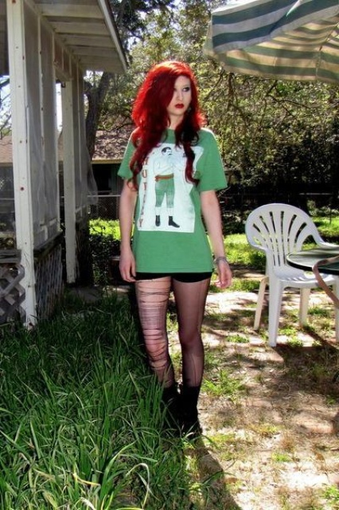
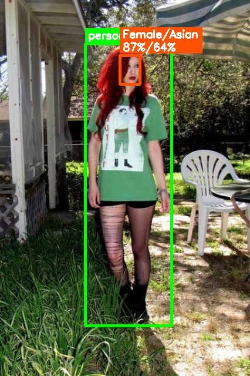
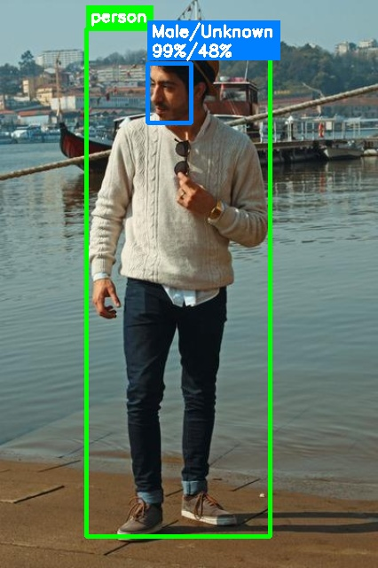
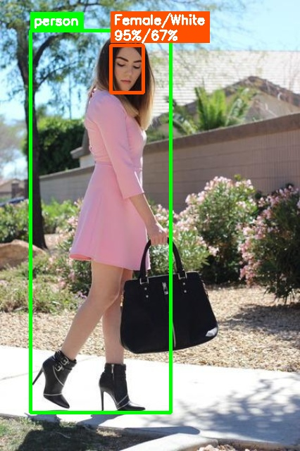
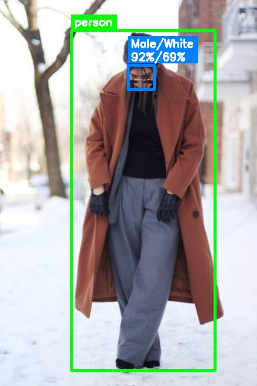
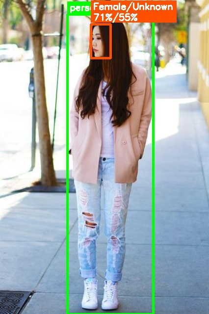
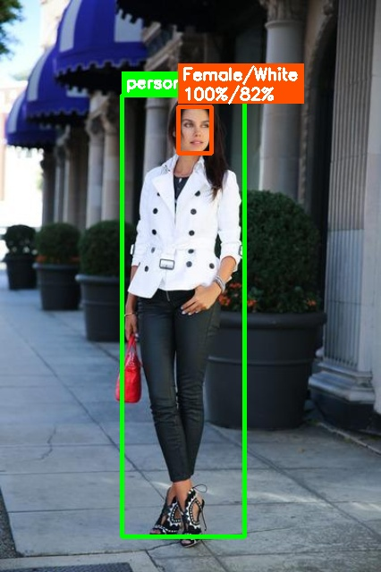
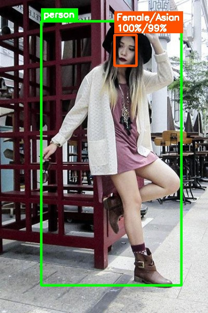

8 pics · YOLOv8 person + RetinaFace face + DeepFace · conf 0.6
| # | Orig | Annotated | File | Person Box | Label | Conf | Face Box | Gender | G Conf | Race | R Conf |
|---|---|---|---|---|---|---|---|---|---|---|---|
| 1 |  |  | atr_15728.jpg | 145,74 292,554 | person | 0.87 | 204,94 238,143 | Female | 87.0% | Asian | 64.3% |
| 2 |  | atr_15729.jpg | 97,32 304,604 | person | 0.93 | 166,71 215,138 | Male | 99.1% | Unknown | 47.5% | |
| 3 |  | atr_15730.jpg | 43,43 242,585 | person | 0.89 | 157,64 203,131 | Female | 94.8% | White | 67.4% | |
| 4 |  | atr_15731.jpg | 118,50 356,614 | person | 0.75 | 212,108 256,148 | Male | 92.5% | White | 68.6% | |
| 5 |  | atr_15732.jpg | 137,29 312,640 | person | 0.90 | 185,49 225,118 | Female | 70.9% | Unknown | 55.0% | |
| 6 |  | atr_15733.jpg | 136,106 273,600 | person | 0.89 | 199,119 236,171 | Female | 99.8% | White | 81.5% | |
| 7 | atr_15734.jpg | 82,36 327,635 | person | 0.92 | 167,65 210,126 | Unknown | 59.8% | White | 77.7% | ||
| 8 |  | atr_15735.jpg | 84,43 371,583 | person | 0.87 | 234,71 279,134 | Female | 99.9% | Asian | 99.3% |
Box: top-left(x1,y1) bottom-right(x2,y2)